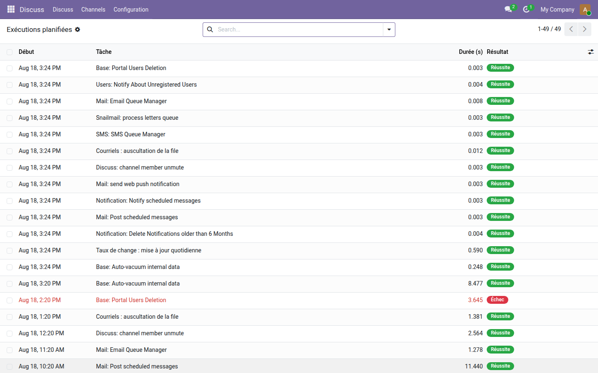
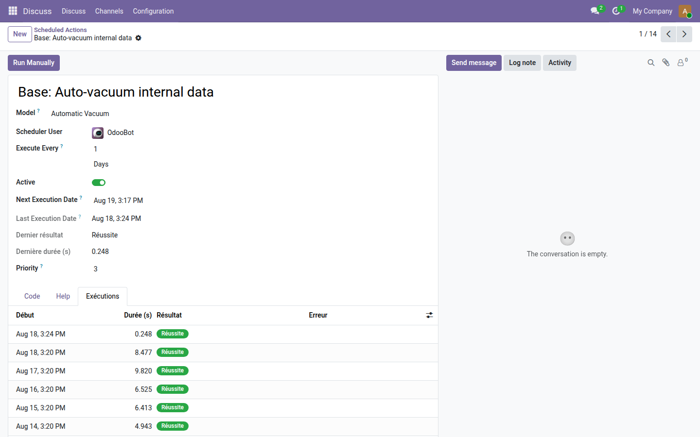

Chaque exécution : durée, réussite, erreur, et l'historique qui va avec.
Odoo garde la date du dernier passage d'une tâche planifiée dans lastcall, et le nombre d'échecs consécutifs dans failure_count. Aucun des deux n'apparaît dans une vue. Une tâche qui échoue toutes les nuits — relances client, synchronisation, calcul de stock — ne se voit donc que dans le journal du serveur, si quelqu'un pense à l'ouvrir.
Quarante-neuf exécutions, dont une en échec, signalée en rouge au milieu des réussites. Sans ce journal, cette ligne-là n'aurait laissé aucune trace visible.

La fiche de la tâche planifiée gagne la date du dernier passage, son résultat, sa durée, et un onglet qui déroule ses exécutions passées.

Savoir qu'une tâche a échoué est un début ; voir l'activité de toute l'instance en est la suite. La gamme OdooSkills propose des tableaux de bord d'exploitation, des journaux d'accès et de modification, et une surveillance de la file de courriels. Catalogue complet : apps.odooskills.com.
Licence LGPL-3 — compatible Odoo 19.0 Community et Enterprise. Support : support@odooskills.com.